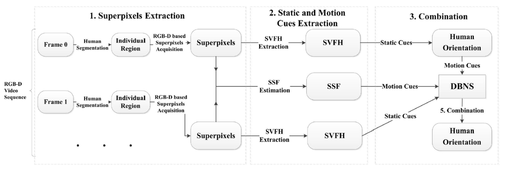
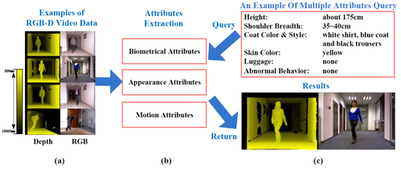

We are looking for highly motivated PhD students and Full-time Researcher to conduct world-class research in my team. Please send your CV to my email.
News
News
- I am looking for research interns with strong publication records for 2020 spring and summer.
- 2019.9 Four ACM MM 2019 Papers are accepted as Oral papers.
- 2019.9 Keynote Presentation "Vehicle Re-identification: Past, Present and Future" in the Multimedia Search and Recommendation Forum of ChinaMM 2019.
- 2019.7 Two IEEE ICCV 2019 Papers are accepted.
- 2019.7 Elected as the Multimedia Systems and Applications (MSA) Technical Committee (TC) of the IEEE Circuits and Systems Society (IEEE CASS) Member.
- 2019.7 Xinchen Liu, Wu Liu, Tao Mei, Huadong Ma: PROVID: Progressive and Multimodal Vehicle Reidentification for Large-Scale Urban Surveillance. IEEE Trans. Multimedia 20(3): 645-658 (2018) is selected as IEEE Trans. on Multimedia 2019 Best Paper.
- 2019.7 IEEE ICME 2019 Outstanding Service Award.
- 2019.7 IEEE ICME 2019 Tutorials Human Behavior Understanding: From Human-Oriented Analysis to Action Recognition [3 Hours] with Ting Yao
- 2019.7 IEEE ICME 2019 Special Session Multimedia Technologies Empowering Retail Experiences Chair
- 2019.5 One IJCAI 2019 Paper is accepted.
- 2019.4 One IEEE CVPR 2019 Paper is accepted.
- 2019.1 One AAAI 2019 Paper is accepted.
Biography
- I am now a senior researcher in Computer Vision and Multimedia Lab, JD AI Research.
- I was a lecturer in Beijing Key Laboratory of Intelligent Telecommunications Software and Multimedia, Beijing University of Posts and Telecommunications. The leader of the lab is Prof. Huadong Ma.
- I got the Ph.D degrees at Multimedia Computing Group (MCG), Institute of Computing Technology (ICT), Chinese Academy of Science (CAS). The leader of MCG is Prof. YongDong Zhang. My supervisor is Prof. JinTao Li, and I got the B.E. degrees in computing science from Shandong University from 2005 to 2009.
- I was an intern in the Microsoft Research Asia under the supervision of Dr. Tao Mei from 2013 to 2014.
- I was a visiting graduate student in the University of Rochester under the supervision of Prof. Jiebo Luo from 2014 to 2015.
Research Interests
- Computer Vision: Human behavior Analysis, Vehicle Search/Re-identification
- Multimedia: Video processing, analysis, and understanding;
Publications (My Google citations)
* is the Corresponding Author of the paper.
* is the Corresponding Author of the paper.
- Yu Sun, Yun Ye, Wu Liu*, Wenpeng Gao, Yili Fu, Tao Mei, "Skeleton-disentangling based Self-attention Temporal Network for Human 3D Mesh Recovery from Monocular Video", ICCV 2019, Accepted. (CCF A)
- Lingxiao He, Yinggang Wang, Wu Liu, He Zhao, Zhennan Sun, Jiashi Feng, "Foreground-aware Pyramid Reconstruction for Alignment-free Occluded Person Re-identification", ICCV 2019, Accepted. (CCF A)
- Xinchen Liu, Wu Liu*, Meng Zhang, Jingwen Chen, Lianli Gao, Chenggang Yan, Tao Mei, "Social Relation Recognition from Videos via Multi-scale Spatial-Temporal Reasoning", CVPR 2019, Accepted. (CCF A)
- Weijian Ruan, Wu Liu*, Qian Bao, Jun Chen, Yuhao Cheng and Tao Mei, "POINet: Pose-Guided Ovonic Insight Network for Multi-Person Pose Tracking", ACM MM 2019, Oral Paper. (CCF A)
- Xinchen Liu, Meng Zhang, Wu Liu*, Jingkuan Song and Tao Mei, "BraidNet: Braiding Semantics and Details for Accurate Human Parsing", ACM MM 2019, Oral Paper. (CCF A)
- Meiyu Liang, Junping Du, Wu Liu, Zhe Xue, Yue Geng and Congxian Yang, "Fine-grained Cross-media Representation Learning with Deep Quantization Attention Network", ACM MM 2019, Oral Paper. (CCF A)
- Xiangpeng Li, Lianli Gao, Xuanhan Wang, Wu Liu, Xing Xu, Jingkuan Song and Heng Tao She, "Learnable Aggregating Net with Divergent Loss for Video Question Answering", ACM MM 2019, Oral Paper. (CCF A)
- Jingkuan Song, Xiaosu Zhu, Lianli Gao, Xin-shun Xu, Wu Liu, Hengtao Shen: Deep Recurrent Quantization for Generating Sequential Binary Codes, IJCAI 2019, Accepted. (CCF A)
- Wan-Jin Yu, Zhen-Duo Chen, Xin Luo, Wu Liu, Xin-Shun Xu: DELTA: A deep dual-stream network for multi-label image classification. Pattern Recognition 91: 322-331 (2019)
- Meng Zhang, Xinchen Liu, Wu Liu, Anfu Zhou, Huadong Ma, Tao Mei, "Multi-Granularity Reasoning for Social Relation Recognition from Images", ICME 2019, Accepted.
- Kun Liu, Wu Liu*, Huadong Ma, Wenbing Huang, Xiongxiong Dong: Generalized zero-shot learning for action recognition with web-scale video data. World Wide Web 22(2): 807-824 (2019)
- Lianli Gao, Pengpeng Zeng, Jingkuan Song, Yuan-Fang Li, Wu Liu, Tao Mei, Heng Tao Shen, "Structured Two-stream Attention Network for Video Question Answering"，AAAI 2019, Accepted. (CCF A)
- Xinchen Liu, Wu Liu*, Tao Mei, Huadong Ma: PROVID: Progressive and Multimodal Vehicle Reidentification for Large-Scale Urban Surveillance. IEEE Trans. Multimedia 20(3): 645-658 (2018) (Best Paper Awards)
- Huadong Ma, Wu Liu*: A Progressive Search Paradigm for the Internet of Things. IEEE MultiMedia 25(1): 76-86 (2018)
- Wu Liu*, Cheng Zhang, Huadong Ma, Shuangqun Li: Learning Efficient Spatial-Temporal Gait Features with Deep Learning for Human Identification. Neuroinformatics 16(3-4): 457-471 (2018) (SCI, IF:3.200)
- Liang Liu, Wu Liu*, Yu Zheng, Huadong Ma, and Cheng Zhang, "Third-Eye: A Mobilephone-Enabled Crowdsensing System for Air Quality Monitoring", UbiComp 2018, Accepted. (CCF A)
- Minghui Zhang, Wu Liu*, Huadong Ma: Joint License Plate Super-Resolution and Recognition in One Multi-Task Gan Framework. ICASSP 2018: 1443-1447
- Shuangqun Li, Wu Liu*, Huadong Ma, Shaopeng Zhu: Beyond View Transformation: Cycle-Consistent Global and Partial Perception Gan for View-Invariant Gait Recognition. ICME 2018: 1-6
- Wu Liu*, Xinchen Liu, Huadong Ma, Peng Cheng: Beyond Human-level License Plate Super-resolution with Progressive Vehicle Search and Domain Priori GAN. ACM Multimedia 2017: 1618-1626 (Full paper, CCF A)
- Jinna Lv, Wu Liu*, Meng Zhang, He Gong, Bin Wu, Huadong Ma: Multi-feature Fusion for Predicting Social Media Popularity. ACM Multimedia 2017: 1883-1888 (CCF A)
- Jingkuan Song, Lianli Gao, Zhao Guo, Wu Liu, Dongxiang Zhang, Hengtao Shen, "Hierarchical LSTM with Adjusted Temporal Attention for Video Captioning", IJCAI, 2017: pp. 2737-2743 (CCF A)
- Wu Liu, Huadong Ma, Heng Qi, Dong Zhao, Zhineng Chen, "Deep learning hashing for mobile visual search", EURASIP J. Image and Video Processing, 2017: 17 (SCI, IF: 1.74)
- Peiye Liu, Wu Liu*, Huadong Ma, “Weighted sequence loss based spatial-temporal deep learning framework for human body orientation estimation,” IEEE ICME, 2017, pp.97-102 (Oral Paper)
- Xinchen Liu, Wu Liu*, Tao Mei, and Huadong Ma, "A Progressive Deep Learning-based Approach to Vehicle Re-identification for Urban Surveillance", ECCV, 2016, pp. 869-884
- Xinchen Liu, Wu Liu*, Huadong Ma, Huiyuan Fu, "Large-Scale Vehicle Re-Identification in Urban Surveillance Videos", IEEE ICME, 2016, pp.1-6 (ICME 2016 Best Student Paper)
- Cheng Zhang, Wu Liu*, Huadong Ma, Huiyuan Fu, "Siamese Neural Network Based Gait Recognition for Human Identification", ICASSP, 2016, pp. 2832-2836
- Yihong Gao, Huadong Ma, Wu Liu, and Shui Yu, "Cost Optimal Resource Provisioning for Live Video Forwarding across Video Data Centers", BIGCOM 2016, pp.27-38 (Best Paper Runner-up, Oral Ppaer)
- Wu Liu, Tao Mei, Yongdong Zhang, Cherry Che, Jiebo Luo, "Multi-Task Deep Visual-Semantic Embedding for VideoThumbnail Selection", IEEE CVPR, 2015, pp. 3707-3715 (CCF A, Google Citations > 100 )
- Wu Liu, Tao Mei, Yongdong Zhang. "Instant Mobile Video Search with Layered Audio-Video Indexing and Progressive Transmission," IEEE Trans. on Multimedia, vol.16, no.8, pp.2242-2255, 2014 (SCI, IF:2.949)
- Wu Liu, Tao Mei, Yongdong Zhang, Jintao Li and Shipeng Li, "Listen, Look, and Gotcha: Instant Video Search with Mobile Phones by Layered Audio-Video Indexing"，Proc. of ACM Multimedia, 2013, pp. 887-896. (Full paper, CCF A)
- Wu Liu, Yongdong Zhang, Sheng Tang, Jinhui Tang, Richang Hong and Jintao Li, "Accurate Estimation of Human Body Orientation From RGB-D Sensors," IEEE Transactions on Cybernetics, vol.43, no.5, pp.1442-1452, 2013 (SCI, IF:3.236)
- Wu Liu, Feibin Yang, Yongdong Zhang, Qinghua Huang and Tao Mei, “LAVES: An Instant Mobile Video Search System Based on Layered Audio-Video Indexing,” Proc. of ACM Multimedia, 2013, pp. 409-410. (CCF A)
- Yicheng Song, Yong-Dong Zhang, Juan Cao, Tian Xia, Wu Liu, Jin-Tao Li, "Web Video Geolocation by Geotagged Social Resources", IEEE Trans. on Multimedia, 14(2): pp. 456-470, 2012 (SCI, IF:2.949)
Honors and Awards
- 2019年，IEEE Trans. on Multimedia 2019 Best Paper Awards.
- 2019年，IEEE ICME 2019 Outstanding Service Awards.
- 2018年，JD AI Research Technical Innovation Award
- 2018年，CVPR 2018 LIP Pose Estimation 1st Place for Single and Multi-person Pose Estimation Tasks
- 2018年， ECCV 2018 WIDER Pedestrain Detection Challenge 2nd Place
- 2017年，Microsoft Research Asia StarTrack Program for Young Faculty
- 2017年，CCF-Tencent “Rhino Bird” Excellent Award、Excellent Patent Award
- 2016 - Chinese Academy of Sciences Outstanding Ph.D. Thesis Award
- 2016 - ICME 2016 Best Student Paper Award
- 2015 - The Dean‘s Special Award of Chinese Academy of Sciences (TOP 1%)
- 2014 - National Scholarship (TOP 3.8%); Pivot of Merit Student in UCAS (TOP 1%);
- 2013 - Director of Special Scholarship in ICT, CAS (TOP 1%);
- 2012 - National Scholarship (TOP 3.8%);
- 2009 - Outstanding Graduates Awards in Shandong Province (TOP 5%); Outstanding Social Practice Individual Awards in Shandong University;
- 2008 - Beijing Olympic Torch Escort Runner;

Mobile Video Search System
I develop an instant mobile video search system through which users can discover videos by simply pointing their phones at a screen to capture a few seconds of what they are watching. The main contributions of this work: 1) Design an innovative mobile video system which represents one of the first attempts towards instant and progressive video search leveraging the light-weight computing capacity of mobile devices. 2) Propose a new layered audio-video (LAVE) indexing scheme to holistically exploit the mutual complementarity between audio and video signals for more robust mobile video search. 3) Propose a progressive query process to support varying length of the query video, where in most cases the length is much less than those in any existing mobile applications. This significantly reduces query time and thus improves user's search experience. The work has been accepted by ACM MM 2013 as full paper and demo paper, IEEE Trans. on Multimedia 2014. [Dataset] [PDF] [SLIDES]
I develop an instant mobile video search system through which users can discover videos by simply pointing their phones at a screen to capture a few seconds of what they are watching. The main contributions of this work: 1) Design an innovative mobile video system which represents one of the first attempts towards instant and progressive video search leveraging the light-weight computing capacity of mobile devices. 2) Propose a new layered audio-video (LAVE) indexing scheme to holistically exploit the mutual complementarity between audio and video signals for more robust mobile video search. 3) Propose a progressive query process to support varying length of the query video, where in most cases the length is much less than those in any existing mobile applications. This significantly reduces query time and thus improves user's search experience. The work has been accepted by ACM MM 2013 as full paper and demo paper, IEEE Trans. on Multimedia 2014. [Dataset] [PDF] [SLIDES]

Estimating Human Body
Orientation based on RGB-D Sensors
I propose an innovative RGB-D based orientation estimation method to estimate the human body orientation. By utilizing the RGB-D information, the proposed method is robust to complicated environment. Specifically, efficient static and motion cue extraction methods are proposed based on the RGB-D superpixels to reduce the noise of depth data. Furthermore, we propose to use a Dynamic Bayesian Network System (DBNS) to effectively employ the complementary nature of both static and motion cues. The work has been accepted by IEEE Trans. on SMC-B. [Dataset] [PDF] [SLIDES]
I propose an innovative RGB-D based orientation estimation method to estimate the human body orientation. By utilizing the RGB-D information, the proposed method is robust to complicated environment. Specifically, efficient static and motion cue extraction methods are proposed based on the RGB-D superpixels to reduce the noise of depth data. Furthermore, we propose to use a Dynamic Bayesian Network System (DBNS) to effectively employ the complementary nature of both static and motion cues. The work has been accepted by IEEE Trans. on SMC-B. [Dataset] [PDF] [SLIDES]

RGB-D based People Search in Intelligent Visual Surveillance
I propose a novel RGB-D based IVS system which is capable of handling multi-attribute queries for searching people in surveillance videos. Taking the advantages of RGB-D information in human segmentation and 3D scene establishment, three groups of human attributes are extracted, i.e., biometrical attributes, appearance attributes and motion attributes. Furthermore, a novel IVS system with RGB-D camera is established, which provides an effective way of searching people via multi-attribute query, following the natural way of finding people in real-world. The work has been published in MMM 2012. [PDF] [SLIDES]
I propose a novel RGB-D based IVS system which is capable of handling multi-attribute queries for searching people in surveillance videos. Taking the advantages of RGB-D information in human segmentation and 3D scene establishment, three groups of human attributes are extracted, i.e., biometrical attributes, appearance attributes and motion attributes. Furthermore, a novel IVS system with RGB-D camera is established, which provides an effective way of searching people via multi-attribute query, following the natural way of finding people in real-world. The work has been published in MMM 2012. [PDF] [SLIDES]
Additional Professional Services
Reviewer for Journals
Reviewer for Journals
- IEEE Transactions on Multimedia, since 2015
- IEEE Transactions on Cybernetics, since 2013
- KSII Transactions on Internet and Information Systems, since 2014
- ACM Transactions on Intelligent Systems and Technology, since 2013
- Multimedia Tools and Applications - Springer, since 2014
- Neurocomputing - Elsevier, since 2014
- Information Sciences - Elsevier, since 2013
- Multimedia Systems - Springer, since 2013